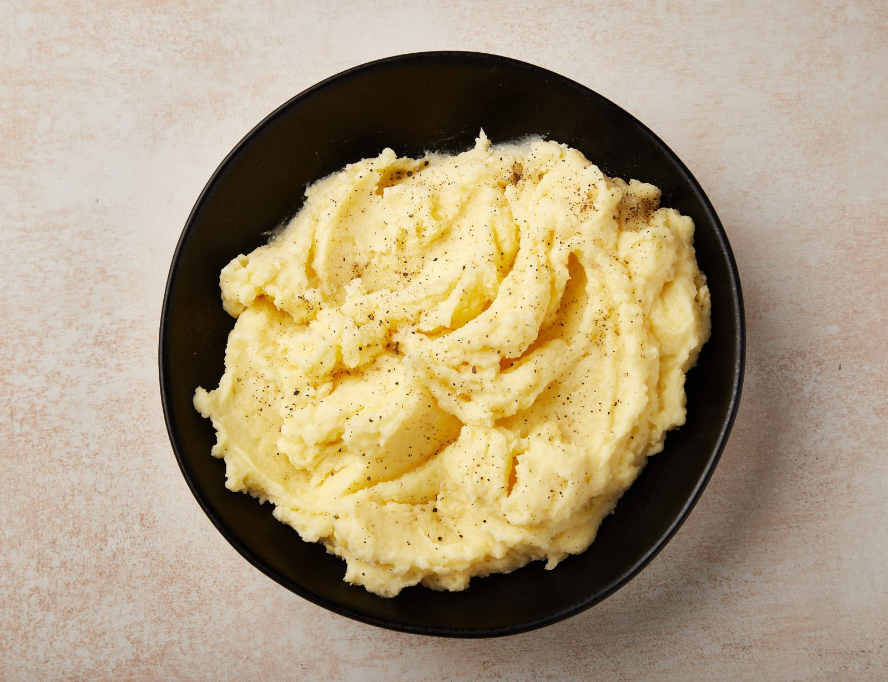

Creamy mashed potatoes are the ultimate comfort food, offering a rich and velvety texture that pairs perfectly with countless dishes. Made with fluffy, starchy potatoes like russets or Yukon Golds, this dish is a staple at family dinners and holiday feasts. The potatoes are boiled until tender, then whipped to perfection with butter, cream, or milk to create a luscious, smooth consistency. Seasoned with salt and a hint of pepper, the flavor is simple yet satisfying. For extra indulgence, some recipes incorporate sour cream, garlic, or cheese for added depth. Served as a side dish, creamy mashed potatoes complement everything from roasted meats to grilled vegetables. Whether you prefer them buttery and rich or light and fluffy, this classic dish brings a sense of warmth and nostalgia to every meal.